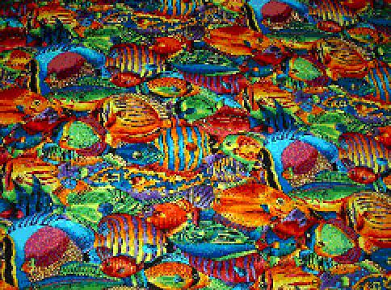

- Easy
-
nthLeftTruncatablePrime
Write the following method:
public static
int nthLeftTruncatablePrime(int n)
This method takes a non-negative integer n and returns the nth left
truncatable prime, as defined on the excellent
List of
Prime Numbers on Wikipedia. According to that page, the left
truncatable primes are "primes that remain prime when the leading
decimal digit is successively removed". Here are the first of
these: 2, 3, 5, 7, 13, 17, 23, 37, 43, 47, 53, 67, 73, 83, 97,
113, 137, 167, 173, 197, 223, 283, 313, 317, 337, 347, 353, 367, 373,
383, 397, 443, 467, 523, 547, 613, 617, 643, 647, 653, 673, 683,...
Your method should be 0-based, so if n==0, your method should return 2.
Also, return -1 if n is negative.
Hint: you should write an appropriate helper method that tests
whether a given number is a left truncatable prime.
Hint: note that 103 and 107 are not left truncatable primes.
Similarly, neither is 307. So, numbers with leading zeroes do not count
as primes for this problem (and, consequently, numbers with any zeroes
at all will not work)!
-
oneBornEveryDay
Say there were 7 randomly-chosen people in a room. Would you bet
that at least one of them was born on each of the 7 days of the week?
Probably not. But what if there were 20 people in the room?
50? 500? When would you change your answer from no to yes?
To answer this, first write the following method:
public static
double oddsOfOneBornEveryDay(int peopleInRoom)
This method takes an integer, representing the number of randomly-chosen
people in the room, and uses Monte Carlo techniques to compute the odds
that at least one person in the room was born on each of the 7 days of
the week (we assume a person is equally likely to be born on any day of
the week). Then, using that method, write the following method:
public static
int fewestPeopleNeededToBetThatOneWasBornEveryDay()
This verbosely-named method takes no parameters and returns the fewest
number of people in the room that are required for you to change your
bet from no to yes. Restated: this method finds the smallest
value for peopleInRoom such that the first method returns a value
greater than 0.50.
- Intermediate
-
The Television Class
Start with Lab8Television.java
Do not modify the Lab8Television main class. Make this code work by
adding the appropriate classes with the appropriate methods as described
by the test methods called by this main method. Note that you do not
have to add any code to the test cases, though you do have to solve them
with general-purpose solutions (and not just hard-code the example test
cases!).
Hint #1: look carefully at the test code to infer the behavior of the
Television class. It is straightforward (no tricks, really!), but you
will not be provided with any description beyond this test code. "Use
the force, read the source!"
Hint #2: to solve this incrementally, you may wish to comment out parts
of the test code so the parts you have implemented will compile and can
be tested as you go.
-
The Coke Machine Class
Start with Lab8CokeMachine.java
As with the preceding problem, do not modify this problem's main class,
and make this code work by adding the appropriate classes with the
appropriate methods as described by the test methods called by this main
method. Same hints apply, too.
- Hard
-
Text Adventure
Start with Lab8TextAdventure.java
This file contains the text adventure. You should complete the 8 tasks listed in
the "Todo" section at the top of the file. You may also extend
this text adventure in interesting ways for bonus (see the last
Challenge problem), but only if you first do at least one of the other
Challenge problems listed below.
- Very Hard
-
Image Editing
(grayScale, zoomIn, zoomOut)
Each of these methods takes an image and returns a new version of that
image (without modifying the original image!). For testing purposes,
you may choose to save these modified images and view the modified files
(say, in your browser). Or you may choose to write a small program that
uses these methods to directly display the modified images. In any
case, you must somehow test your methods in a reasonable manner, which
should include some sort of visual inspection (by you).
- grayScale
Write a method, grayScale, that takes a BufferedImage and returns
another BufferedImage (or null if the argument is null), which is
the same image (same size, etc) but with the colors removed and
replaced with their grayscale equivalents. Now, a color is a shade
of gray if its red, green, and blue values are all the same (we will
ignore alpha values for this problem). If they are all 0, the color
is black. If they are all 255, the color is white. Any value in
between is some shade of gray. So this problem largely reduces to
converting some values for red, green, and blue into a single value
between 0 and 255, the grayscale. For complex reasons beyond the
scope of this course, here is the conversion:
grayscale = (0.3 * red) + (0.59 * green) + (0.11 * blue)
So you replace each pixel with a new pixel whose red, green, and
blue are all the given grayscale for that pixel. If you are
interested in the math and physics behind this, you may optionally
read the Wikipedia
page on Grayscale.
For example:
Becomes:
- zoomIn
Write a method, zoomIn, that takes a BufferedImage and a scale
(which is a small positive integer), and returns a new BufferedImage
that is the result of zooming in on the original (that is, making it
larger) according the scale. If the scale is non-positive,
return null. So if the scale is 2, the result is twice as large
(both in width and in height). To do this, each original pixel will
expand to a scale-by-scale box of identical pixels in the result.
For example, if the scale is 3, each original pixel is expanded into
a corresponding 3-by-3 box in the result.
Note: this approach will lead to visual artifacts due to aliasing,
especially as the scale gets larger. These can be reduced using a
technique called antialiasing. But do not use antialiasing
here (or the autograder will be most unhappy!). If you are
interested in antialiasing, check out the bonus problem on it.
For example:
Becomes (with scale=2):

- zoomOut
Write a method, zoomOut, that takes a BufferedImage and a scale
(which is a small positive integer), and returns a new BufferedImage
that is the result of zooming out on the original (that is, making
it smaller) according to the scale. So if the scale is 2,
the result is half as large (both in width and in height).
If the scale is non-positive, or if the resulting image would be
smaller than one pixel in either dimension, return null. To do
this, we must do the previous process in reverse. Here, each
scale-by-scale box of original pixels must be replaced by a
single pixel in the result. Make the red value of that single
pixel the average of the scale2 red values in the
scale-by-scale box of pixels it represents. Then the green is the
average of greens and the blue is the average of blues. Note: if
the image is not a multiple of the scale, then just take the average
of the existing pixels (ignore pixels that lie outside the original
-- what else could you realistically do?)..
Note: if you zoomOut (shrink) an image and then zoomIn (enlarge)
that result by the same scale, you should get roughly your original
image. However, since zoomOut is "lossy", you will lose some detail
in this process, especially at larger scales. Still, this may be
useful for testing purposes (your choice).
For example:
Becomes (with scale=2):
-
Antialiasing
Write a program that addresses the problem of antialiasing as described
above. Do not look up the solution to this -- figure it out for
yourself. Then, document your approach very clearly. Also, show
(visually, with examples) how your approach improves the accuracy of a
zoomIn/zoomOut sequence (show both the un-antialiased result and your
improved antialiased version).
-
Subset Sum
Read the
Wikipedia page on subsetSum. Then, in the file
Lab8BonusSubsetSum.java, write the following method (along with a
suitable test method):
public static
boolean subsetSum(int[] a)
This method takes an arbitrary-sized array of ints and returns true if
some non-empty subset of elements in the array sums to zero. For
example, given the array {−7, −3, −2, 8, 5}, the result is "true"
because the subset {−3, −2, 5} sums to zero. As the Wikipedia page
notes, this problem is NP-complete, which basically means that your
solution will be very slow for even moderately-sized arrays (and
that's ok). Later in the course, we may learn about techniques that
make problems such as this easier to program. The point of this bonus
problem is for you to discover one of those techniques on your own, so
be sure not to consult any online sources (besides that one Wikipedia
page) or read about this problem in textbooks or elsewhere. Also, note
that the Wikipedia page discusses an approximate polynomial time (that
is, fast) solution. That does not apply here. We want an exact
solution, which will be slow, but again, that's ok.
Hint: if you are given an array with N elements, think about counting
from 0 up to (2N-1) using an N-digit binary number, and how
that might relate to this problem... Following on this hint, you will
get most of the points for solving this problem for arrays of size 32 or
smaller (why does that make the problem easier?), but full credit
requires that you solve it for even larger arrays (though, being
NP-complete, these larger arrays may require vast amounts of time).
-
More Text Adventure
Note: you may only do this problem if you have completed at least
one previous Challenge problem on this assignment (and preferably two of
them).
In the file Lab8BonusTextAdventure.java, write your own text
adventure by extending the one we wrote together. You do not have much
time for this, so keep your story simple. But to obtain bonus,
it must be interesting (that is not required of the simple
assignment above). There should be a story or a problem to solve,
with an interesting way to win and some interesting ways to lose, and
winning should require at least a few steps in a specific order (that
is, an interesting problem to solve). Again, though, keep it simple.
The point here is for you to understand the mechanics of writing
a simple text adventure and not to actually write a full-scale (or even
half-scale) working game.
For bonus credit, in addition to what you did for the required work
above, you must include at least 3 new rooms, 3 new things, 3 new
verbs, and 2 new properties (like "immobility" of things). Try to make
it challenging and fun but doable.